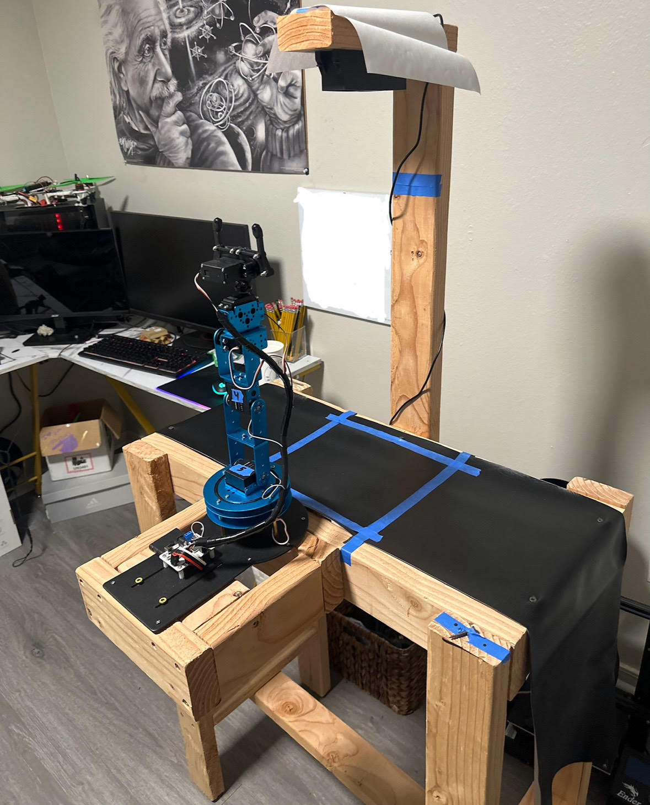

Senior Capstone
Using Python, Yolo
v7, tensorflow, keras
and OpenCv my
senior Capstone
team and I created a
robotic arm capable
of identifying the
class of the trash item
(plastic, paper, metal)
and then picking it up
and putting it in the
correct bin
autonomously.


Using Java I made a Neural Network to detect the class of a
handwritten digit (0-9) with 88% accuracy on test data using the MNIST Dataset.
Naive Bayes Algorithm trained on 10,000 records of credit card data, focusing on five features: Geography, isActiveMember, HasCrCard, Balance, and CreditScore. The goal is to predict the class (Exited) based on these features, results were 80.5% accurate.
I made this website using one of html5 up's templates then customizing the css, php, html and hosted it on github pages.